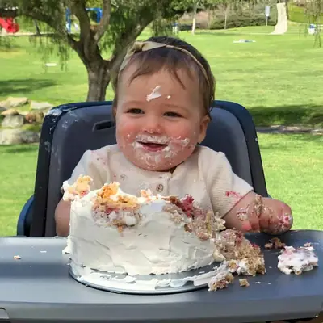

Healthy First Birthday Smash Cake Without Sugar

Ingredients
- 3/4 cup (6 ounces) Whole milk Plain Greek Yogurt
- 1 cup (240g) mashed bananas, about 3 medium (make sure to use very ripe ones)
- 2 eggs, beaten
- 1 teaspoon vanilla extract
- 1 cup raspberries or blueberries (optional)
- 1/4 cup coconut oil (optional, see note)
- 2 cups (200g) rolled oats
- 1 1/2 teaspoon baking powder
- 1/2 teaspoon baking soda
- 1 teaspoon cinnamon
Steps
- Preheat oven to 350° Fahrenheit. Grease or line cake pans with parchment paper.
- Add oats to a food processor or blender and blend into a flour. You can also use oat flour if you have it. Combine with the rest of dry ingredients.
- In a separate bowl, combine all the wet ingredients together.
- Combine dry and wet ingredients and mix until everything's well incorporated.
- Evenly distribute the batter into three 5 inch cake pans. Bake for 25-30 minutes, until inserted toothpick comes out clean.
- Let the cakes cool slightly in the pan for about 5 minutes before transferring to a wire rack to cool completely.
- In the meantime prepare the frosting of choice(see note).
- Slice the rounded top off of each cake to create a flat surface. Add dollops of frosting to first layer of cake and spread evenly. Place the second layer on top and repeat. You can go a step further and frost the entire cake.
Recipe by Min Kwon · Kidfriendly Meals, from MJ and Hungryman. Saved here for personal use; the original has the full notes, tips and photos. Open original